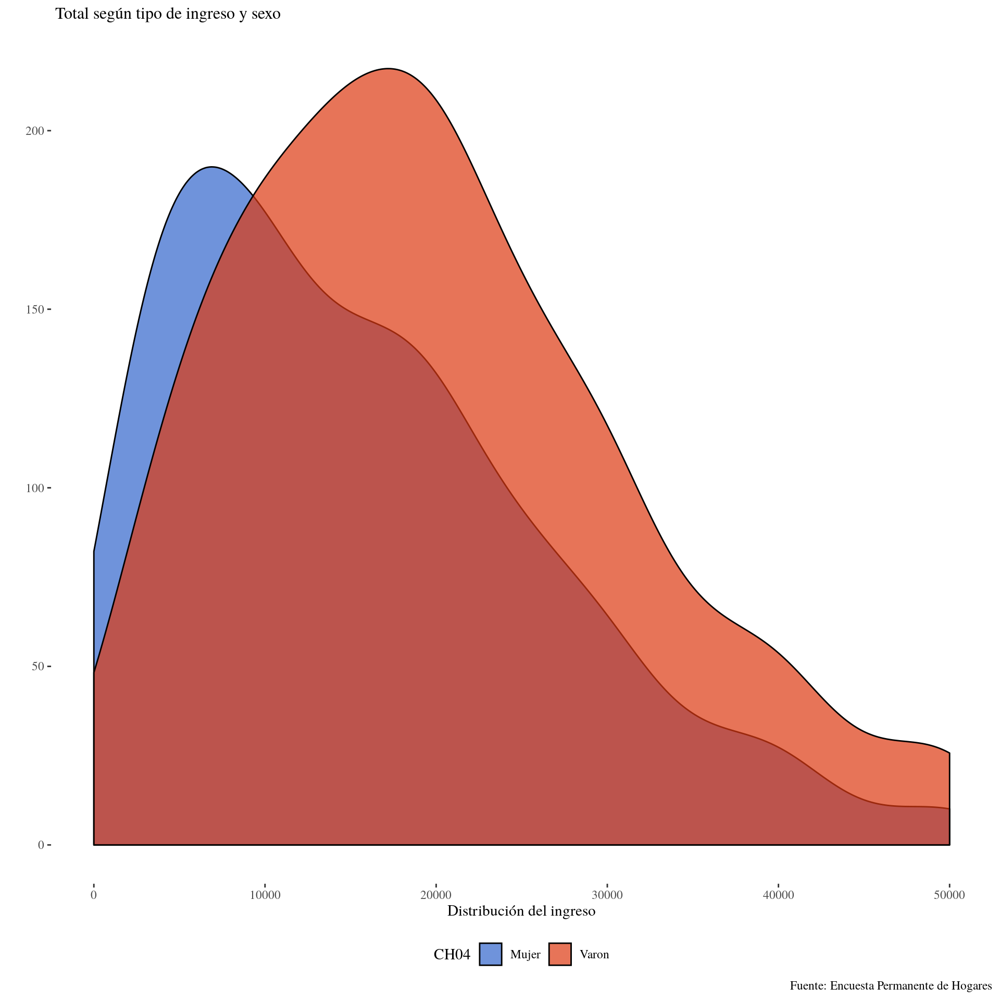
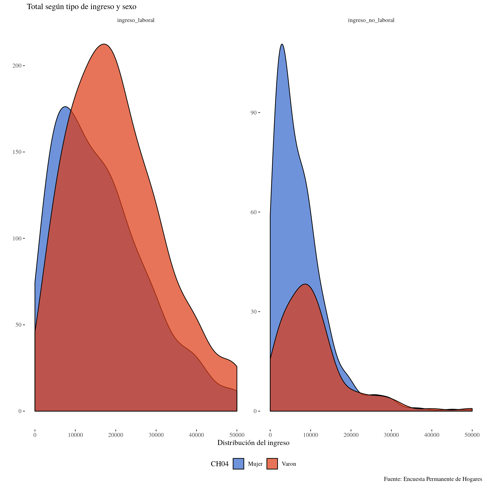

4.2 Práctica Guiada
4.2.1 Graficos Ingresos - EPH
Para esta práctica utilizaremos las variables de ingresos captadas por la Encuesta Permanente de Hogares
A continuación utilzaremos los conceptos abordados, para realizar gráficos a partir de las variables de ingresos.
#Cargamos las librerías a utilizar
library(tidyverse) # tiene ggplot, dplyr, tidyr, y otros
library(ggthemes) # estilos de gráficos
library(ggrepel) # etiquetas de texto más prolijas que las de ggplot
Individual_t119 <- read.table("../fuentes/usu_individual_t119.txt",
sep=";", dec=",", header = TRUE, fill = TRUE)4.2.1.1 Boxplot de ingresos de la ocupación principal, según nivel educativo
Hacemos un procesamiento simple: Sacamos los ingresos iguales a cero y las no respuestas de nivel educativo.
Es importante que las variables sean del tipo que conceptualmente les corresponde (el nivel educativo es una variable categórica, no continua), para que el ggplot pueda graficarlo correctamente.
# Las variables sexo( CH04 ) y Nivel educativo están codificadas como números, y el R las entiende como numéricas.
class(Individual_t119$NIVEL_ED)## [1] "integer"class(Individual_t119$CH04)## [1] "integer"ggdata <- Individual_t119 %>%
filter(P21>0, !is.na(NIVEL_ED)) %>%
mutate(NIVEL_ED = as.factor(NIVEL_ED),
CH04 = as.factor(CH04))ggplot(ggdata, aes(x = NIVEL_ED, y = P21)) +
geom_boxplot()+
scale_y_continuous(limits = c(0, 40000))#Restrinjo el gráfico hasta ingresos de $40000
Si queremos agregar la dimensión sexo, podemos hacer un facet_wrap()
ggplot(ggdata, aes(x= NIVEL_ED, y = P21, group = NIVEL_ED, fill = NIVEL_ED )) +
geom_boxplot()+
scale_y_continuous(limits = c(0, 40000))+
facet_wrap(~ CH04, labeller = "label_both")
Por la forma en que está presentado el gráfico, el foco de atención sigue puesto en las diferencias de ingresos entre niveles educativo. Simplemente se agrega un corte por la variable de sexo.
Si lo que queremos hacer es poner el foco de atención en las diferencias por sexo, simplemente basta con invertir la variable x especificada con la variable utilizada en el facet_wrap
ggplot(ggdata, aes(x= CH04, y = P21, group = CH04, fill = CH04 )) +
geom_boxplot()+
scale_y_continuous(limits = c(0, 40000))+
facet_grid(~ NIVEL_ED, labeller = "label_both") +
theme(legend.position = "none")
4.2.2 Histogramas
Por ejemplo, si observamos el ingreso de la ocupación principal:
hist_data <-Individual_t119 %>%
filter(P21>0)
ggplot(hist_data, aes(x = P21,weights = PONDIIO))+
geom_histogram()+
scale_x_continuous(limits = c(0,50000))
En este gráfico, los posibles valores de p21 se dividen en 30 bins consecutivos y el gráfico muestra cuantas observaciones caen en cada uno de ellos
4.2.3 Kernels
La función geom_density() nos permite construir kernels de la distribución. Es particularmente útil cuando tenemos una variable continua, dado que los histogramas rompen esa sensación de continuidad.
Veamos un ejemplo sencillo con los ingresos de la ocupación principal. Luego iremos complejizandolo
kernel_data <-Individual_t119 %>%
filter(P21>0)
ggplot(kernel_data, aes(x = P21,weights = PONDIIO))+
geom_density()+
scale_x_continuous(limits = c(0,50000)) El eje y no tiene demasiada interpretabilidad en los Kernel, porque hace a la forma en que se construyen las distribuciones.
El eje y no tiene demasiada interpretabilidad en los Kernel, porque hace a la forma en que se construyen las distribuciones.
El parametro adjust, dentro de la función geom_densitynos permite reducir o ampliar el rango de suavizado de la distribución. Su valor por default es 1. Veamos que sucede si lo seteamos en 2
ggplot(kernel_data, aes(x = P21,weights = PONDIIO))+
geom_density(adjust = 2)+
scale_x_continuous(limits = c(0,50000))
Como es esperable, la distribución del ingreso tiene “picos” en los valores redondos, ya que la gente suele declarar un valor aproximado al ingreso efectivo que percibe. Nadie declara ingresos de 30001. Al suavizar la serie con un kernel, eliminamos ese efecto.Si seteamos el rango para el suavizado en valores menores a 1, podemos observar estos picos.
ggplot(kernel_data, aes(x = P21,weights = PONDIIO))+
geom_density(adjust = 0.01)+
scale_x_continuous(limits = c(0,50000))
Ahora bien, como en todo grafico de R, podemos seguir agregando dimensiones para enriquecer el análisis.
kernel_data_2 <- kernel_data %>%
mutate(CH04= case_when(CH04 == 1 ~ "Varon",
CH04 == 2 ~ "Mujer"))
ggplot(kernel_data_2, aes(x = P21,
weights = PONDIIO,
group = CH04,
fill = CH04)) +
geom_density(alpha=0.7,adjust =2)+
labs(x="Distribución del ingreso", y="",
title=" Total según tipo de ingreso y sexo",
caption = "Fuente: Encuesta Permanente de Hogares")+
scale_x_continuous(limits = c(0,50000))+
theme_tufte()+
scale_fill_gdocs()+
theme(legend.position = "bottom",
plot.title = element_text(size=12))
ggsave(filename = "../resultados/Kernel_1.png",scale = 2)Podemos agregar aún la dimensión de ingreso laboral respecto del no laboral
kernel_data_3 <-kernel_data_2 %>%
select(REGION,P47T,T_VI, TOT_P12, P21 , PONDII, CH04) %>%
filter(!is.na(P47T), P47T > 0 ) %>%
mutate(ingreso_laboral = TOT_P12 + P21,
ingreso_no_laboral = T_VI) %>%
gather(., key = Tipo_ingreso, Ingreso, c((ncol(.)-1):ncol(.))) %>%
filter( Ingreso !=0)# Para este gráfico, quiero eliminar los ingresos = 0
kernel_data_3 %>%
sample_n(10)## REGION P47T T_VI TOT_P12 P21 PONDII CH04 Tipo_ingreso Ingreso
## 1 44 20000 0 0 20000 180 Mujer ingreso_laboral 20000
## 2 40 7400 5600 0 1800 404 Varon ingreso_no_laboral 5600
## 3 42 10000 0 0 10000 96 Mujer ingreso_laboral 10000
## 4 1 41000 8000 0 33000 3451 Mujer ingreso_no_laboral 8000
## 5 40 27000 0 0 27000 208 Mujer ingreso_laboral 27000
## 6 43 45000 0 0 30000 799 Mujer ingreso_laboral 30000
## 7 1 11500 9500 0 2000 874 Mujer ingreso_no_laboral 9500
## 8 42 35000 0 0 35000 618 Varon ingreso_laboral 35000
## 9 40 30000 0 0 20000 344 Mujer ingreso_laboral 20000
## 10 41 8500 0 0 8500 328 Mujer ingreso_laboral 8500 ggplot(kernel_data_3, aes(
x = Ingreso,
weights = PONDII,
group = Tipo_ingreso,
fill = Tipo_ingreso)) +
geom_density(alpha=0.7,adjust =2)+
labs(x="Distribución del ingreso", y="",
title=" Total según tipo de ingreso y sexo",
caption = "Fuente: Encuesta Permanente de Hogares")+
scale_x_continuous(limits = c(0,50000))+
theme_tufte()+
scale_fill_gdocs()+
theme(legend.position = "bottom",
plot.title = element_text(size=12))+
facet_wrap(~ CH04, scales = "free")
ggsave(filename = "../resultados/Kernel_2.png",scale = 2)En este tipo de gráficos, importa mucho qué variable se utiliza para facetear y qué variable para agrupar, ya que la construcción de la distribución es diferente.
ggplot(kernel_data_3, aes(
x = Ingreso,
weights = PONDII,
group = CH04,
fill = CH04)) +
geom_density(alpha=0.7,adjust =2)+
labs(x="Distribución del ingreso", y="",
title=" Total según tipo de ingreso y sexo",
caption = "Fuente: Encuesta Permanente de Hogares")+
scale_x_continuous(limits = c(0,50000))+
theme_tufte()+
scale_fill_gdocs()+
theme(legend.position = "bottom",
plot.title = element_text(size=12))+
facet_wrap(~Tipo_ingreso, scales = "free")
ggsave(filename = "../resultados/Kernel_3.png",scale = 2)